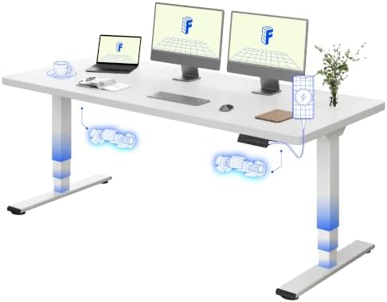
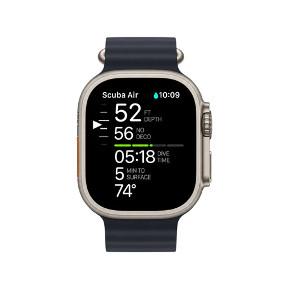

SETUP E PRODUTIVIDADE
Meu setup
Os equipamentos que fazem parte do meu dia, da mesa à mochila.
Busco otimização e alto desempenho no que faço, e escolho meus equipamentos com o mesmo cuidado.
Antes de comprar cada item, pesquisei seus recursos, avaliei os prós e contras, assisti a análises no YouTube e considerei os trade-offs. Queria entender se o preço mais alto justificava a compra.

Mesa de trabalho

FLEXISPOT EC5 Plus Electric Dual (abre em uma nova aba)
Com a FLEXISPOT, consigo fazer reuniões e ter momentos de foco em pé. Gosto da qualidade dos materiais e da potência dos dois motores. Os comandos e os presets de altura são muito úteis no meu dia a dia.

Logitech MX Keys (abre em uma nova aba)
A posição e a resposta das teclas tornam a digitação prazerosa. O teclado numérico facilita quando preciso trabalhar com números, e uso bastante os atalhos para abrir aplicativos, bloquear o PC, tirar screenshots e alternar entre desktops virtuais.

Logitech MX Master 3S (abre em uma nova aba)
Uso todos os botões do mouse para abrir programas e acionar workflows, e personalizo o Actions Ring no Logi Options+ com atalhos para diferentes tarefas. O scroll lateral é um game changer para navegar por planilhas do Excel e timelines de vídeo.

Infinitebook Daily Goal Digger (abre em uma nova aba)
Ainda prefiro papel e caneta para manter tarefas e prioridades à vista. Com vários cadernos e agendas, eu vivia procurando páginas, copiando tarefas pendentes e fazendo círculos, estrelas e asteriscos conforme as prioridades mudavam. Pesquisei o reMarkable 2 e o iPad Pro, mas a dependência de bateria, a possibilidade de usar para outros fins e o preço me afastaram dessas opções.
Com o Infinitebook, posso apagar e reorganizar meu dia quantas vezes precisar. Nos modelos que usei, encontrei páginas para listas, anotações pautadas e espaço em branco para desenhar soluções e arquiteturas. A ideia de comprar uma vez só não se confirmou comigo: já estou no quarto modelo, porque fui descobrindo formatos conforme minhas necessidades evoluíam.
Áudio e vídeo

Logitech MX Brio (abre em uma nova aba)
Por anos, trabalhei em qualquer lugar com um MacBook de 13 polegadas e nenhum equipamento extra. Depois que comecei a usar monitor externo, passei a reparar em quantas pessoas aparecem de lado nas reuniões, olhando para longe da câmera enquanto falam.
Um treinamento de liderança e comunicação me fez pensar na postura e no contato visual também nas reuniões remotas. Comprei uma webcam básica e depois passei para a MX Brio 4K. As cores, o ajuste em ambientes com pouca luz e os controles de imagem fazem uma grande diferença na minha presença nas reuniões online.

Logitech G PRO X 2 LIGHTSPEED (abre em uma nova aba)
Já tive vários equipamentos de áudio em busca de bons graves e de um som que eu goste. Demorei para encontrar um headset que combinasse o som que eu queria para música com um bom microfone e um visual discreto para reuniões executivas. O PRO X 2 reúne essa combinação, com um aplicativo para ajustar o som e os efeitos.
Fora da mesa

DJI Osmo Mobile 6 (abre em uma nova aba)
Estou começando a produzir conteúdo, e o Osmo facilita a gravação. Com ele, consigo gravar com mais estabilidade, apoiar o celular no tripé e transportar o equipamento com facilidade.

Apple Watch Ultra (abre em uma nova aba)
Posso não perceber uma ligação quando o celular vibra no bolso. O Watch me ajuda a notar essas chamadas, além dos alertas, alarmes e cronômetros que uso ao longo do dia. Ainda não encontrei muita coisa nos apps e recursos específicos que considere útil e bem desenhada para um relógio.

Mous × Mercedes-AMG Backpack (abre em uma nova aba)
Visitas a clientes e eventos envolvem muitas viagens, então preciso de uma mochila discreta, com espaço para organizar e proteger os equipamentos. Já tive modelos esportivos, os nerds da Google Cloud e uma Victorinox que foi minha favorita até chegar ao fim da vida depois de muitas horas de voo. A Mous tem o acabamento e a divisão dos compartimentos que procuro para carregar meu setup. Este não é o modelo UltraTex, mas também não tenho planos de jogar a mochila de um helicóptero.